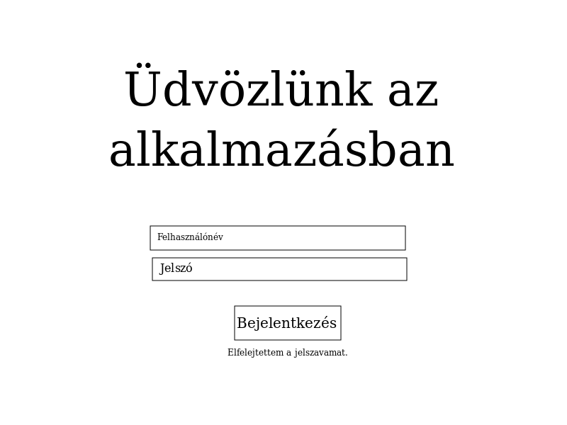
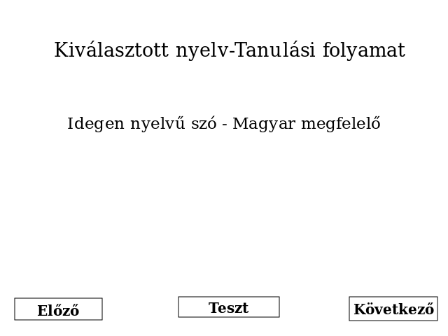
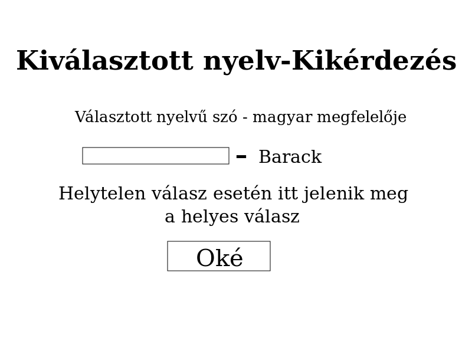

Rendszerünk célja, hogy megkönnyítse az emberek nyelvtanulásának folyamatát. Szeretnénk egy olyan stoftvert készíteni, melynek segítségével bárki könnyedén fejlesztheti nyelvtudását, anélkül, hogy drága könyvekre kellene költenie vagy esetleg magántanárhoz járna. Felhasználóink számára szeretnénk biztosítani az egyéni haladást ugyan azon számítógépen,aminek köszönhetően számontarthatják egyéni haladásukat a különböző nyelvek tanulásában. Céljaink közé tartozik az is, hogy egy szilárd szókincset adjunk a tanulóinknak, ennek érdekében pedig folyamatosan visszakérdezünk a már megtanult szavakra is, biztosítva ezzel, hogy a felhasználó folyamatosan felidézze és használja a korábban elsajátított szópárokat is.
| Szerepkör | Felelősség |
| Felhasználók | Használni a programot, megtanulni a kiválasztott nyelvet és használni a megtanult nyelveket. |
| Fejlesztők | Karbantartani, illetve továbbfejleszteni az alkalmazást, felhasználók féle lehetőséget biztosítani a hibák bejelentésére. |
| Név | Feladat |
| Tarcsa Tamás | A visszakérdezés folyamatának megírása. Adatbázis menedzselése a projektben |
| Bakos Bálint | Bejelentkezés,illetve tanulási folyamat elkészítése. |
| Erdei Kristóf | Front-end fejlesztés |
| Tóth Csaba | Tesztek megírása,Front-end fejlesztés |
| Dátum | Haladás |
| 2019.09.25 | Szükséges dokumentumok elkészülése |
| 2019.09.27 | A projekt alapfunkciói működőképesek |
| 2019.09.30 | A szoftver elkészülése. |
| 2019.09.30 után | Karbantartás igény esetén. |
1. Dokmentációk elkészülése
2. Szerepkörök kiosztása és projekt kezdése
3. Alapvető funkciók működése
4. Grafikus felület elkészülése
5. Tesztek írása
6. A projekt elkészülése
Az üdvözlő képerníőre képzeltük el a bejelentkezést, természetes a háttér valamilyen kép vagy szín lenne:
A tanulási folyamatot egy, a következőhöz hasonló képernyőn képzeltük el:
A visszakérdezést pedig hasonlóképpen tervezzük megvalósítani:
Egy olyan szoftvert szeretnénk készíteni, aminek segítségével az emberek könnyedén fejleszthetik nyelvtudásukat. Különböző nyelvek egyszerre történő tanulását is szeretnénk lehetővé tenni a programban, illetve céljaink közé tartozik, hogy a programban felhasználónév és jelszó segítségével elkülönítsük a felhasznlók előrehaladását, így akár ugyan azon számítógépen egyszerre akár többen is használhatják a programot gond nélkül. Szeretnénk elkülöníteni benne a szófajokat is, így specifikusabban tudnak a felhasználók tanulni. A program feladata lesz az is,hogy kikérdezze a felhasználó által tanult új szavakat, beleszőve a kikérdezés folyamatába a korábban már megtanult szavakat is, ezzel ismételve, hogy biztosak legyünk benne, hogy nemcsak ideig óráig tartott a tanuló tudása.
Szoftverünkkel azon emberek problémáját kívánjuk megoldani, akiknek nehézkesen megy a nyelvtanulás, nincs pénzük a drága nyelvkönyvekre vagy magántanárra, ahogyan már említettük a Követelmény Specifikációban. Bár szoftverünk célja jelen pillanatban csak a választott nyelven belüli szókincs bővítése, véleményünk szerint az idegen nyelven történő magabiztos felszólalás alapja egy szilárd szókincs.
Elsősorban amire szükségünk lesz, az egy User osztály, amiben egy felhasználó
nevét, kódolt jelszavát, illetve a már megtanult szópárokat tároljuk egy map-ben,ahol
a magyar nyelvű szó a kulcs, míg az idegen nyelvű az érték rész. A jelszó kódolosa
a következőhöz hasonlóan történjen:
String jelszo = "jelszo";
String hash1 = "nisofnipafnspsa$cas2324";
String hash2 = "nsnbpivan/@ejof46546fsafvca";
String kodolt = hash1 + Caesar(jelszo) + hash2;
Char[] pwd = pwdField.getPassword();
if(user.passwd.equals(hash1 + Caesar(pwd)+hash2))
//Sikeres bejelentkezés
else
//Sikertelen bejelentkezés
Amennyiben a felhasználó elfelejtené a jelszavát biztosítanunk kell neki egy lehetőséget,amivel megváltoztatja.Ennek érdekében a User osztályban tárolni kell egy jelszó-visszaállító kódot, amit a felhasználótól majd elkérhet a program, a helyreállítás érdekében. A jelszó visszanyerésére, használjuk a Stringek substr() metódusát, valamint írjunk egy Caesar dekódolót. A helyesen beütött kód utána jelenjen meg a felhasználónak a jelenlegi jelszava, valamint egy kérdés, hogy szeretné-e megváltoztatni ezt. Biztosítsunk lehetőséget a megváltoztatásra. A program csak sikeres bejelentkezés vagy a "Használat vendégként" gomb választása után induljon el.
Az adatok tárolására .json fájlokat használjunk, melyek írásához, illetve
olvasásához a gson könyvtárat használjuk. Legalább két adatbázisra lesz
szükségünk a projekt megvalósításához. Az egyik adatbázisban a felhasználók
adatait tároljuk, a felhasználónevüket, jelszavukat és a már megtanult szavak
listáját map-ként.
[
{
"username": felhasznalonev,
"password": jelszo,
"recover": helyreallito,
"angol": {
'főnév': {
"magyar1": "angol1",
"magyar2": "angol2"
...
},
"melleknev": {
"magyar1": "angol1",
"magyar2": "angol2"
...
}
},
"francia": {
"melleknev": {
"magyar1": "francia1",
"magyar2": "francia2"
...
},
'főnév': {
"magyar1": "francia1",
"magyar2": "francia2"
...
}
}
}
]
A másik fájl a nyelveket és a szópárokat tartalmazza.
Itt választhatjuk azt is, hogy minden nyelvnek külön fájlt hozunk létre.
Amennyiben az egy fájlost megoldást választjuk, úgy kulcs-érték párokként
tároljuk a nyelveket és a szavakat, ahol a kulcs a nyelv, az érték pedig
a szótárunk.
[
{
"angol": {
'főnév': {
"magyar1": "angol1",
"magyar2": "angol2"
...
},
"melleknev": {
"magyar1": "angol1",
"magyar2": "angol2"
...
}
},
"francia": {
"melleknev": {
"magyar1": "francia1",
"magyar2": "francia2"
...
},
'főnév': {
"magyar1": "francia1",
"magyar2": "francia2"
...
}
}
}
]
A nyelvek különböző fájlokban való tárolása esetén pedig a felhasználó
választása alapján csak kiválasztjuk melyik json fájlt töltse be a program,
hogy a választott nyelvű szavak szótárát kapjuk.
A felhasználó által újonnan megtanult szavak listájából random kiválasztunk egy szópárt, amiből véletlenszerűen kivesszük a magyar vagy az idegen nyelvi szót. Ezután megjelenítjük ezt a felhasználónak akinek ki kell egészítenie a helyes fordítással. A felhasználó által megadott fordítást ellenőriznie kell a programnak. A szót először kisbetűsre kell átváltani, hogy ne számítson hogyan lett megadva szó nagy vagy kis betűvel. Majd a megadott szót betűnként össze kell hasonlítani a kérdezett szó párjával. Ez Javaban történhet az equals metódussal. Ha helyes a metódus visszaad egy truet vagy falset, ezzel látszik, hogy helyesen adte-e meg a felhasználó a szót. Helyes megadás után a szöveg mező zöldre változik, ha helytelenül adják meg akkor pedig pirosra változik és megjeleníti a helyes választ. Ezután ismét válasszunk szópárt. Ha a felhasználó kétszer eltalálta ugyanazt a szót az átkerül a megtanult szavak listájába.
A most fentálló nyelvtanulási módszerünk nem felhasználóbarát. A papíron történő tanulási folyamatok elavultnak tekinthetőek. Másrészt időigényes, nem végezhető Bárhol és bármikor. Ezzel szemben az új üzleti folyamatunk segítségével a felhasználó igényeit a mai kornak megfelelő módszerekkel fogjuk kielégítni. Azzal, hogy digitális platformra helyezzük a tanulást. Ehhez elég rendelkezni a programunkkal, amit már bárhol bármikor bárki használhat gyorsan és egyszerűen. Így megfelelő szolgáltatást tudunk nyújtani mindenki számára, aki nyelvet szeretne tanulni. A program futtatása után a felhasználó elkészíti a profilját, ha az még nem létezik. Ha igen, akkor bejelentkezik. Ezután kiválasztja azt, hogy épp milyen nyelven szeretne éppen tanulni. Majd jöhet is a tanulás folyamata, amit a felhasználó egyszerűen, könnyen kezelhetően, Intuitívan tud kezelni és használni.
Programunkak rendelkezni kell funkcionális, illetve nem funkcionális követelményekkel is. Fontos számunkra, hogy a kevésbé profi számítógépes felhasználók is boldogulni tudjanak a rendszerünkkel, ne jelenthessen ez semmiféle hátráltató tényezőt. Emiatt az alkalmazásunknak a lehető leginkább egyszerűnek és könnyen kezelhetőnek kell lennie. A kezelőfelütnek egyszerűen átláthatónak, letisztultnak, szépnek kell lennie. A felhasználónak legyen lehetősége saját profilt csinálni. Legyen lehetősége bejelentkeznie. Tudjon tetszés szerint tanulni kívánt nyelvet választani. Fontos szempont, hogy programunk ne foglaljon túlságosan sok tárhelyet. Illetve ne legyen nagy rendszerigénye, hogy minél széresebb körben el tudjon terjedni. Ha internetes kapcsolat szükséges, akkor pedig a lehető legkevesebb adatforgalmat generálja. A felhasználó részéről feltétel, hogy rendelkezzen ezekhez megfelelő számítógéppel.
A szoftverünk megvalósítása az MVC, magyarul MNV azaz a Modell-Nézet-Vezérlő elveit fogja követni, ami azt jelenti, hogy az alkalmazásunkat több rétegre bontjuk fel, ami áll a megjelenítésből, azaz a felhasználói felületből, amit a szoftvert használók ténylegesen látnak az alkalmazásból, áll a "logikából", ami a felhasználó által véghezvitt eseményeket, műveleteket dolgozza fel, ami kiválthat további eseménysorozatot, illetve áll a tárolt adatok kezelésével foglalkozó részből, jellemzően az adatokat egy adatbázisban tárolják, mi jelen esetben .json fájlokat használunk az adatok tárolásához. Azzal, hogy ezt a megvalósítást választottuk nagyban megkönnyíti a munkánkat, hiszen átláthatóbb lesz ezzel legfőképpen a kódunk.
A már korábban említett minta alapján, azaz a Modell-Nézet-Vezérlő szerint alakul az alkalmazásunk rétegei. A program elején, amikor elkérünk néhány adatot a felhasználótól, aki megadja a kért adatokat, ezzel bekerülnek egy .json adatok tárolására alkalmazott fájlba, amivel már módosítottuk az adatbázisunkat. Tehát már az elején kapcsolat alakul ki az adatbázis, a vezérlő és a nézet között, ahol a felhasználó adta meg a szükséges információkat. Továbbiakban a programunk egy fontos részét képezi a tanulási folyamat rész, ahol a felhasználó tanulja a választott nyelvet, ami szintén egy külön .json fájlban van tárolva,tehát itt is történik kommunikáció az említett rétegek között. Hasonlóan a tanulási folyamat részhez, a visszakérdezés folyamata is jelentős a programunkban, mint ismert, a tanulás folyamat alatt a program megjegyzi, hogy a felhasználó miket tanult már meg és ebből véletlenszerűen választva jelnnek meg a szópárok felváltva hiányosan, ahol a felhasználónak kell a tudása alapján megfelelően kitölteni a hiányzó részt, tehát a háttérben egy ellenőrzés történik a felhasználó tudta nélkül és a begépelt válasznak megfelelően zöld, tehát jó vagy pedig piros, azaz rossz választ adott meg, ezzel is manipulálva a kimenetet, hogy milyen választ adott. Programunk fő komponensei közé tartozik a tesztek végrehajtása. A lehető legtöbb tesztek végrehajtása elősegíti a programunk megfelelő működését.
A programunk kódjának megírása közben igyekszünk törekedni arra, hogy esetleges jövőbeli kódbeli változtatások ne történjen nagy fejfájással. Igyekszünk tehát olyan rugalmas programot írni, amit ha később valamiért megszeretnént bizonyos szintig módosítani, akkor azt a jól rétegelt és felépített kódot minden további nélkül könnyedén megtudjuk csinálni Tovább, ha egy olyan ember nézne rá a kódra aki először látja, például egy cég megvette a programot vagy éppen csak közös munka folyik bizonyos emberekkel, és valamit szeretne módosítani akkor ne zavarodjon bele, tehát fontos, hogy a programunk nyitott legyen a változásokra és ez már tovább megy akár a rendszer bővíthetőségig amiről már a következő fejezetben beszélünk.
Mivel egy nyelvtanulós programról beszélünk, ezért fontos lehet, hogy több nyelv közül is lehessen választani a későbbiekben, ami a felhasználói közönséget növeli. A rendszer felépítéséből adódóan lehetőségünk lehet többféle választást kínálni a felhasználóknak a témák kapcsán, hogy milyen témakörökben szeretnék erősíteni a tudásukat.
A felhasználóknak biztosítunk egy bejelentkezési lehetőséget, jelszóval ellátva és így mindenki saját maga nyomon tudja követni, a már megtanult szavait. A jelszó titkosítására úgynevezett "Caesar" kódolási technikát alkalmazunk, kiegészítve két darab String típusú "hash"-el, ami a megadott jelszó köré kerül, így megnehezítve az esetleges jelszó feltöréseket.
Szintén fontos pont a rendzserünk sikeres elkészítésének folyamatában az, hogy megfelelő tesztelést vigyünk véghez. Nem szeretnénk, ha a kiadás után súlyos vagy akár kevébé súlyos hibák benne maradnának. Illetve valami nem működne rendesen, esetleg egyáltalán vagy nem úgy ahogy mi azt szeretnénk. Emiatt folyamatosan ellenőrizni fogjuk a programunk működését már a fejlesztés elkezdésének első szakaszaiban is. Ebben mindenki részt fog venni, illetve a későbbiekben külsős tesztelőket is bevonhatunk majd a teljes siker érdekében. Mindennek tökéletesen kell működnie ahhoz, hogy a teszt sikeres legyen. Kezdve azzal, hogy a felhasználási felületek rendesen betöltődnek-e, a menü elemek, a gombok, a felületek amikkel interakcióba lépnek a felhasználók mind mind működnek, méghozzá pontosan úgy ahogy azt mi elvárjuk. A bejelentkezés folyamatának mindenképp működőképesnek és gördülékenynek kell lennie. Pont úgy, mint ahogyan a nyelv kiválasztásának és azt követő teljes tanulási folyamatnak. A program legyen megfelelőképp gyors, hogy a felhasználónak öröm legyen használnia.
A tesztek véghezviteléhez ezúttal manuális tesztelést végeztünk el:
| Vizsgálni kívánt teszt megnevezés | Szükséges lépés | Megtett lépés eredménye |
|---|---|---|
| A program elindítása | java -jar Nyelvtanulas-1.0-SNAPSHOT.jar | A program elindult. |
| "Regisztráció" gomb megjeleníti-e a regisztráció felületet? | Egérrel bal click gombra. | Megnyílik a regisztrációi felület. |
| "Új jelszó" gomb megjeleníti-e a kívánt felületet? | Egérrel bal click a gombra. | Megnyílik az "Új jelszó" felület. |
| "Kilépés" gomb bezárja az alkalmazást. | Egérrel bal click a "kilépés" gombra. | Kilép a program. |
| "Bejelentkezés" gomb a helyesen megadott adatokkal beengedi a felhasználót. | "Felhasználó" és "Jelszó" mező helyes kitöltése. | Megnyílik a nyelvválasztás lehetőség. |
| Helytelenül megadott felhasználó és/vagy jelszó. | Helytelenül beírt felhasználó és/vagy jelszó. | Hiba üzenet kíírása a problémáról. |
| Regisztráció felületen a regisztráció helyessége. | A felhasználó egy felhasználó nevet és jelszót ad meg. | Regisztrálva lett a felhasználó. |
| Nyelvválasztásnál a zászlókra kattintás. | Zászlók valamelyikére bal click. | Tanulási folyamat elindulása. |
| Tanulási folyamatnál az "Előző" gomb az előző szópárt jeleníti meg. | Bal click az "Előző" gombra | A program visszaugrik az előző szópárra. |
| Az "Előző" gombra való kattintás, ha nem volt még előző. | Bal click az "Előző" gombra. | A kattintás nem engedélyezett. |
| A "Következő" gombra való kattintás, ha elfogytak a szavak. | Bal click a "Következő" gombra. | A kattintás nem engedélyezett. |
| Tanulási folyamatnál az "Következő" gomb a következő szópárt jeleníti meg. | Bal click a "Kővetkező" gombra. | A program a következő szópárt megjeleníti. |
| Tanulási folyamatnál a "Teszt" gomb megnyomása és a teszt elindítása. | Bal click a "Teszt" gombra. | Elindul a tesztelés fázis. |
| Sikeres teszt végén Gratuláció ablak felugrása. | Sikeresen teljesíteni a tesztet a megadott módon. | A program megjeleníti a gratulációs felületet. |
| A teszt során beírt helyes válasz a felhasználótól. | Helyes válasz beírása a megadott helyre. | "Helyes válasz" kíírása és következő szópár megjelenése. |
| A teszt során beírt helytelen válasz a felhasználótól. | Helytelen válasz beírása a megadott helyre. | Rossz válasz jelzése a felhaszbálónak és a jó válasz megjelenítése. |
| A "Teszt" gombra való kattintás a tanulás megkezdése. | Bal click a "Teszt" gombra. | A kattintás nem engedélyezett. |
Minden a apróságot tesztelnünk kell, hogy véletlenül se csússzon be semmilyen hiba a szoftverbe. Tesztelnünk kell: a felhasználó sikeresen betud-e jelentkezni a ténylegesen megadott jelszójával és felhasználónevével, szakszerűen a választható nyelveket tölti be a program, majd a megfelelő szópárokat olvassa be a memóriába, pontosan annyi szópárt jelenít meg a felhasználónak amennyit kell, megjeleníti-e a felhasználónak a szópárokat, a tudásellenőzés során a program csak a helyes megoldást fogadja el, felváltva kérdez fordítást magyarról idegen nyelvre és idegen nyelvről magyarra, ha minden szópárt helyesen megválaszolt kétszer, akkor a program teljesítettnek minősíti a tesztet és elmenti a szópárokat, hogy legközelebb azt már ne kérdezze, kis és nagybetűt nem veszi figyelmebe az ellenőrzés, a szavakat helyesen ellenőrzi.
Ahhoz, hogy a program futtatható legyen a gépre telepíteni kell a mavent ez a build folyamat automatizálásában segít. Ezután az mvn compile paranccsal lefordítjuk byte kódra a forráskódot. Majd az mvn package paranccsal egy jar fájlt hozunk létre, amely a target mappába kerül. Ezzel pedig futtatható maga a szoftver: java -jar Nyelvtanulas.jar.
Természetesen programunkat elkészülte után nem szeretnénk bejefezettnek tekinteni. A sikeres teszt elvégzésétől függetlenül, ha bármilyen hiba előjön, azt javítani szeretnénk minél hamarabb, nem cserben hagyva felhasználóinkat. Emelett szeretnénk a későbbiekben tovább fejleszteni szoftverünket, folyamatosan új funkciókat hozzáadva. Ennek érdekében szeretnénk kontaktot tartani a felhasználóinkkal, hallgatni az észrevételeikre. Illetve, ha bármilyen probléma merül fel részükről, annak megoldásában a segítségükre lenni. Ezáltal a jövőben várhatóak frissítések, amiket szintén tesztelni fogunk, ahogy az a teszttervek alcím alatt megtalálható. Szeretnénk, ha ez a projekt egy minél szélesebb palettát fedne le a jövőben a nyelvtanulás témakörön belül. Amivel akár az adott nyelv teljes elsajátítása lehetséges.